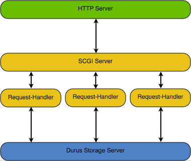

Durus: A Persistence System for Python
David Binger
MEMS Exchange
Abstract
This paper describes Durus, a package for transactional maintenance of persistent graphs of Python instances.
Background
The MEMS Exchange software development team developed Durus after using ZODB successfully for three years. We were very satisfied by the general architecture used by ZODB, but were also aware that much of the complexity of the ZODB source code existed to support features that the MEMS Exchange would never use: most notably the support for multiple threads in a process. Durus is primarily a re-implementation of the subset ZODB architecture that we use for our web applications.
The Target Application
Although Durus can be useful in a wide variety of applications, it was written with a specific target in mind, and it may help the reader to know the general context. In the picture that follows, each oval represents a separate long-running process.
When an HTTP request arrives, the HTTP Server converts it to an SCGI request and passes it along to an SCGI server that is listening on a port on the local interface. 1
The SCGI Server manages a pool of request-handler child processes. When an SCGI request arrives from the HTTP server, the SCGI Server passes the request with a socket descriptor for the connection to a request-handler that is not busy.

The main application-level code runs in each of a pool of request-handler processes. Each request-handler process handles one request at a time. 2 Each response is written back (through the received socket descriptor) to the HTTP Server, which transmits to the client, perhaps through an SSL connection.
In the course of preparing a response, the request-handler processes examine and sometimes change persistent instances. To accomplish this, each request-handler maintains a connection to a shared Durus storage server. The connection can be used by Durus to retrieve a persistent instance with a given identification number. To limit traffic with the storage server, each connection maintains a cache of loaded instances. In the course of processing a request, a request-handler may change objects in the cache. When the response is ready, the request handler uses the connection to commit these changes (or abort them, if something went wrong).
In summary, we have a shared memory with multiple caches. Here, as in similar situations, the tricky part is in maintaining some sort of data consistency, and that is the primary purpose of Durus.
Pickles for Persistence
Durus stores instances in a file so that they can be used later. Instances must be converted to strings before they can be written to a file. Durus uses the Python pickler for this serialization. The pickler is powerful in that it can serialize instance graphs, even if they contain circular references. In Durus, we want to manage change in a rather large instance graph, with, for example, hundreds of thousands of instances. The pickle of the whole instance graph (our “universe”) might be hundreds of MB: too big for fast writes.
Fortunately, the pickler includes hooks that make it possible to put bounds on the part of the instance graph that is actually serialized. In Durus, the pickler behaves specially whenever it encounters a reference to an instance of the “Persistent” class (described in detail in a section below). Instead of crawling forward and including the instance in the pickle in the usual way, a reference to a Persistent instance is replaced with an identifier that can be used to locate that instance later. If the referred-to instance does not already have an assigned identifier, the pickler assigns one.
The critical benefit of this behavior is that it effectively partitions an instance graph into distinct components, one component for each Persistent instance, and with a distinct identifier for each instance. With this behavior, we can record a change in one Persistent instance by writing the corresponding pickle instead of pickling the universe. Moreover, we can unpickle a single Persistent instance’s state when we need it instead of being forced to load the whole universe of instances. In Durus, the state of a Persistent instance is not loaded until it is used, as, for example, when application code looks for the value of an attribute.
Accessing Stored Instances
In Durus, the Storage class provides an index for all these Persistent instance pickles: you can retrieve the pickle for a given identifier. The FileStorage class implements the Storage methods and keeps all of the pickles on disk in a single file. When the FileStorage instance is constructed in a Python program, it traverses the file and builds a dictionary that maps each instance identifier to the offset in the file where that instance’s pickle is stored. If the file is extremely large, then traversing the file might be slow. If the number of instances is extremely large, then the dictionary mapping instance identifiers to offsets might use an unacceptable amount of memory. The limits will vary from one machine to another, and on specific application requirements. For a point of reference, the MEMS Exchange storage file is about 130 MB, with approximately 350,000 Persistent instances, and it runs nicely.
Only one FileStorage can have a storage file open in read-write mode. The FileStorage constructor locks the file to make sure that this rule is followed. In the MEMS Exchange application, however, we need to support read-write mode from multiple connections (one in each request handler). Durus provides the StorageServer class for to support sharing. A StorageServer wraps a FileStorage instance and provides access for clients through TCP connections. 3 Each client, running in another process, has an instance of the ClientStorage class. The ClientStorage and StorageServer instances use a simple protocol to communicate over the TCP connection. As a result, each client process gets read-write Storage functionality.
Durus applications always access storage through a Connection instance. Whereas the Storage provides indexed access to pickles, the Connection provides indexed access to Persistent instances. Multiple Connections, each with its own ClientStorage instance, may share Persistent instances through a common StorageServer.
Durus from the Command Line
The Durus distribution includes a command line tool called “durus” that makes it easy to experiment. The “ durus -h” command gives a help message, but there are just a few options that you need to know to get started.
First, “ durus -s --file experiment.durus ” will start a Durus server using the file named “experiment.durus”. The server stays in the foreground and prints log messages that will help you see what it is doing.
Next, in a different shell, run “ durus -c ”: this starts an interactive client with a connection to your storage server. If you are connecting for the time to the “experiment.durus” file, you will notice, when you start the client, that the server prints a message “ Committed 1 objects 77 bytes ” indicating that a Persistent instance was saved to the file. This first instance, known as “root” is always created automatically on the first connection to a Storage. The root is a dictionary-like instance with instance identifier 0. As you start the client, a few useful names are made available in the local environment: notably “root” and “connection”.
Try making a change to root: for example, try “ root[’a’] = 1 ”. To save your change, use “ connection.commit() ” . You should see, in the server shell window, a log message indicating that your change has been saved. Open a second connection (using “ durus -c ”) in a third shell, and evaluate “ root[’a’] ”. The result is 1. Stop both clients, restart one, and evaluate the same expression again. The result is still 1. Congratulations.
Transactional Change Management
In the course of processing a request, a web application might modify dozens of Persistent instances. When the changes are all ready, the application calls the Connection’s commit() method to save them to the database. To maintain the database in a consistent state, the changes must either be made in their entirety, or else not at all. We refer to a set of changes saved (or to be saved) all at once as a transaction. When the connection’s commit() method is called, the connection sends the changes to the Storage, and the Storage appends a transaction record on the end of the file. The Storage makes sure that the the transaction records are written out and completed serially.
If one connection’s commit() completes while another connection’s commit() is in progress, the second commit() will fail and raise a ConflictError exception. When this happens, the application must decide on the appropriate response. 4
Often, one connection saves a new version of a Persistent instance while another connection has the old version cached. It is important for every connection to have a mechanism for clearing out-of-date instances from the cache. To facilitate this, a transaction number is issued by the Storage every time a new transaction is committed. Each Connection keeps track of the last transaction number reported by the Storage. The Connection gets an updated report of the current transaction number every time it sends a request to the Storage. When the Storage reports the new transaction number, it also sends the identifiers of objects that have changed since the Connection’s last report. If the Connection finds invalid objects in the cache while attempting to read or write from the Storage, a ConfictError exception is raised, and the application must determine the next step to take.
Sometimes an application makes changes to instances in the connection’s cache, and subsequently decides not to save the transaction. The connection has an abort() method to allow for this. Besides causing all changes to be undone, the abort() method synchronizes the connection with the Storage, so that any out-of-date instances are removed from the cache.
After every attempt to process a request, the MEMS Exchange application calls commit() or abort(). When the request processing completed in the normal way, commit() is called because we want to save any changes that were made. If something went wrong while processing the request, abort() is called to make sure that the changes are forgotten.
The Persistent Class
The Persistent class plays a central role in Durus: it implements machinery that supports the tracking of change and cache behavior. Persistent instances have several attributes that are devoted to this purpose, but they are stored in slots, so the instance’s __dict__ belongs entirely to application-level code. Persistent is a new-style class, and it implements a __new__() method. The __new__ method initializes the persistence attributes. This means that subclasses are not required to call Persistent.__init__().
The “state” of a Persistent instance is the content of its __dict__: this is what gets pickled and stored. Sometimes, the Persistent instance is in a “ghost” state, meaning that contents of the pickle are not loaded into the __dict__. Whenever a program attempts to access or set an attribute on a Persistent instance that is in the ghost state, the Persistent class automatically loads the pickle behind the scenes. Whenever a value in the __dict__ is set, the instance is marked as changed, and will be saved if the transaction is committed.
For the programmer, this behavior is all transparent. When you access or change attributes of a Persistent instance, you do it the same way you would with any object. 5 The main thing you need to remember is to call the connection’s commit() when you want to save all changes, and abort() when you want to forget them.
This automatic activity when you get or set attributes happens because Persistent implements __getattribute__() and __setattr__() methods. These methods are called with very high frequency in most Python programs, so it is important for them to be as fast as possible. To optimize these methods, the Python implementation of them is separated into a superclass of Persistent called PersistentBase, and Durus includes an alternative C implementation of PersistentBase that is used if it is installed.
An application may sometimes need to change the state of a Persistent instance without setting an attribute. For example, suppose a Persistent instance has a ‘data’ attribute whose value (loaded from the pickle) is a list. An application may call the list’s append() method to add an element. This new element is part of the Persistent instance state, and it has changed, but the Persistent class has not been notified. This is bad because the next commit will not save the new version. In this situation, the program must explicitly tell the Persistent instance that a change has been made: the method for doing this is _p_note_change(). 6
Customized Persistent Classes
Applications can use instances of Persistent directly, but most applications will probably use instances of Persistent subclasses, equipped with methods that suit the application. To make your class persistent, just add Persistent to the list of base classes. To ensure proper behavior, you do need to make sure that changes to your instances always get the attention of the Persistent class. Most of the time, changes to instances involve setting attributes, and in these cases, there is nothing more for the programmer to do. If, however, a change is made to a non-Persistent container within a Persistent instance, the programmer must make sure that _p_note_change() is called.
Durus includes several subclasses of Persistent that meet common needs. The PersistentList class (defined in durus.persistent_list) provides the usual list methods, with persistence taken care of automatically. If you keep items in a PersistentList rather than a plain non-persistent list, then you can call the append() method with the assurance that the change will be saved with the next commit() (except if an abort() comes first, of course). The source code for PersistentList is pretty simple: you might want to look at it as an example if you are planning on maintaining non-persistent containers on attributes of a Persistent instance.
Durus provides a dict-like subclass of Persistent called PersistentDict. Like PersistentList, the main purpose of PersistentDict is to provide a common data structure in a manner that participates in the persistence system without special treatment from the application programmer.
PersistentList and PersistentDict are alike, in that they hold their data internally on an attribute whose value is the basic type (list or dict). Because they are Persistent, the underlying data structures are loaded only on an as-needed basis. This is very useful if you have long lists, for example, that may not be used often. Most of the time, the actual contents of the list may remain pickled. When, however, you do access the elements of a PersistentList or PersistentDict for the first time, the entire contents of the list must be loaded. For really huge data sets, this might be slower than you would like. The problem is that the entire data set is contained in a single pickle.
The cost of these monolithic pickles is even higher when changes are made and saved. On every commit(), the pickle of the entire data set must be written to disk. Besides the potential of being slow, this can become a space problem because FileStorage simply appends every change to the end of the underlying file. If these changes happen very frequently, the underlying file might fill a disk.
This space issue is one reason Durus also provides a BTree class. A BTree acts pretty much like a dict, except that the underlying data is distributed among many smaller instances of a subclass of Persistent (called BNode). Because the data stored in a BTree is divided among many smaller persistent objects, it can be accessed without loading the entire data set (unlike PersistentDict or PersistentList). When you change an item in a BTree, it is usually only a small part of the BTree that is involved, so the total space required to record a change is relatively small. The space required for a change does not grow linearly with the number of items in the data set. This makes BTree more attractive for data sets that are large or for which changes are frequent.
The benefits of BTree do come at a cost, though, the code is much more complicated than it is for PersistentDict, and, once all of the data sets are loaded, accesses are slower. The MEMS Exchange application uses PersistentDict in most cases.
Computed Attributes
Durus includes an unusual subclass of Persistent called ComputedAttribute. This class is unusual, for a Persistent instance, because it is specially designed to not save any state changes. The intended purpose is for a ComputedAttribute to act as a container for information derived from other Persistent instances. In cases like this, the ComputedAttribute is useful because it can hold the derived information without actually storing it in the database. Besides avoiding duplication, this makes it possible to maintain the consistency of derived data.
For example, suppose A maintains information derived from B, and that another connection commits a change to B. The problem is that we need some way to know that A is no longer up-to-date in this connection and in every connection that has A loaded. This synchronization is possible if A is a ComputedAttribute, and if every method that changes B calls A’s invalidate() method. The invalidate() method clears the derived information currently in A and also calls A’s _p_note_change() method. The interesting effect of this is that, even though A has no state information to save, any versions of A that are held in caches in other connections will be flushed. In other words, a ComputedAttribute A’s invalidate() method gives a client the ability to notify all other clients that their versions of A must be dropped and re-computed.
Maintenance
Every time a transaction is committed, Durus appends the corresponding set of pickles to the end of the file on disk. Over time, this file grows. Whenever a particular instance is included in a transaction, the pickle in the new transaction makes obsolete all preceding pickles of that instance. We recover the space used by these obsolete pickles, and thereby shrink the file, using the connection’s pack() method.
Packing also provides garbage collection. It only keeps instances that can be reached by some sequence of references in instances, starting with the root.
The durus command-line tool provides an easy option for packing a file: “ durus -p ”. Use “ durus -p --help ” to see the list of options for specifying the Storage that you want to pack.
Packing stops other clients from writing, copies all of the current pickles into another file, and then swaps the old and new files. Administrators should be aware that any other read/write connections will be locked out during the pack, which takes time proportional to the size of the packed version of the file. Packing should be done as needed. 7 The required frequency depends on the rate at which data is changing for the application, and on the total size of the pickles of the changed instances.
Inspection Functions
The storage.py source file includes some functions that are useful for inspecting the contents of a Durus Storage.
One of these functions is get_census(), which takes a storage argument and returns a dictionary where each key is a class name, and the value gives the number of pickled instances of that class that are stored in the database.
The get_reference_index() function takes a storage argument and returns a dictionary where each key is an object identifier and the corresponding value is a list of identifiers for instances whose pickles contain references to the instance identified by the key.
Cache Management
Each Connection maintains a cache of instances. To control the amount of memory required by the cache, the cache forces some loaded instances into the ghost state as needed. Changing an instance to the ghost state saves memory because it clears the instance __dict__ .
The cache manager traverses a fraction of the cache on every commit or abort call, ghost-ing instances that have not been used recently. Recent usage is indicated by a _p_touched value that is stored on every instance of Persistent. As the cache manager traverses an instance, it sets the _p_touched value to False. The Persistent class causes the _p_touched value to be set to True on every attribute access. When the cache manager gets around to traversing the same instance again, it uses the value of the _p_touched attribute to decide whether or not the instance has been used recently. If it has not been used recently, and if the cache is too big 8 , the instance is made into a ghost.
The cache manager uses weak references to the instances so that they can be removed by the garbage collector when they are no longer referenced from anywhere else.
Limitations
A Durus storage server maintains a dictionary in memory that gives the file offset of the record for each instance identifier. As the number of saved instances grows, this index grows, so this could put a practical limit on the number of instances that can be supported by a Durus application. In an experiment on a Linux machine, the virtual memory required for a storage server appeared to grow linearly with the number of instances at a rate of less than 100 MB of virtual memory required for each addition of 1 million instances. At 5 million instances, the memory requirement was about 414 MB.
A Durus FileStorage builds the index on startup, so startup time will increase in proportion to the number of stored objects. This could be a limiting factor for some applications.
The low-level file format used by FileStorage uses a 4 byte unsigned integer to store the length of a single instance record, so Durus will not behave well for instances whose pickles have 2 32 or more bytes.
License
The Durus 1.5 license terms are those of the CNRI open source license, which was used for Python itself before 2001, when Python development was hosted by CNRI. Because, I think, the terms say that questions about the license are governed by Virginia, this license is not considered to be GPL-compatible. The license is short and included in the LICENSE.txt file in the distribution. The next Durus release will probably use a license that is GPL-compatible.
The Distribution
Durus version 1.5 is available for download from
http://www.mems-exchange.org/software/durus/
The source code is small: the compressed distribution file has only 35,511 bytes. The following table lists the source files, excluding documentation files and unit tests.
|
Lines |
File |
Description |
|---|---|---|
|
4 |
__init__.py |
|
|
295 |
btree.py |
Provides BTree. |
|
97 |
client.py |
Interactive client script. Used by the “durus” script. |
|
96 |
client_storage.py |
Provides ClientStorage. |
|
343 |
connection.py |
Provides Connection. |
|
93 |
convert_zodb.py |
Script to convert a ZODB file to a Durus file. |
|
72 |
error.py |
Provides DurusError classes. |
|
314 |
file_storage.py |
Provides FileStorage and TempFileStorage. |
|
34 |
logger.py |
Supports logging through the Python logging module. |
|
36 |
pack_storage.py |
A script for packing a Durus file. |
|
205 |
persistent.py |
Provides Persistent and ComputedAttribute. |
|
120 |
persistent_dict.py |
Provides PersistentDict. |
|
147 |
persistent_list.py |
Provides PersistentList |
|
86 |
run_durus.py |
Script for running a storage server. Used by the “durus” script. |
|
135 |
serialize.py |
Provides low-level classes dealing with pickles. |
|
27 |
setup.py |
Distutils installation script. |
|
84 |
storage.py |
Provides Storage. |
|
188 |
storage_server.py |
Provides StorageServer. |
|
28 |
utils.py |
Provides some low level conversion utilities. |
|
202 |
_persistent.c |
Provides the C implementation of PersistentBase. |
|
32 |
durus |
The primary command-line script. |
Acknowledgments
The MEMS Exchange software team of early 2004 (Anton Benard, David Binger, Roger Masse, and Neil Schemenauer) developed Durus in the course of working on the project funded by DARPA contract #MDA972-03-1-0022. Neil Schemenauer initiated work on Durus and made it fast by, among many other things, writing the C implementation of the PersistentBase class. Currently (in early 2005) Neil Schemenauer and Anton Benard are working independently as contractors.
The Durus architecture follows that of the ZODB, and we thank Jim Fulton and the Zope Corporation for writing and releasing ZODB.
1 In the MEMS Exchange application, we use Apache 1.3 with the mod_scgi module to make this happen. The cgi2scgi program, included in the mod_scgi distribution, is a convenient and portable alternative.
2 In the MEMS Exchange application, the request-handler processes use Quixote to build responses.
3 The StorageServer listens on a port, usually on the local interface.
4 In the MEMS Exchange application, the request is re-processed from the start several times if necessary, to see if the processing can be completed without a conflict
5 This transparent support for persistence is an extremely attractive feature of the ZODB architecture.
6 The ZODB also has a Persistent class that behaves similarly. In ZODB, the standard way to note change is by setting the value of the _p_changed attribute. The Durus Persistent class implements a _p_changed property so that “self._p_changed = 1” does the same thing as “self._p_note_change()”
7 The MEMS Exchange runs a cron job that packs the database once a week. Applications with more frequent commits might require more frequent packing.
8 The target size for the number of non-ghost instances can be set using a keyword on the Connection constructor, or by using the set_cache_size() method.